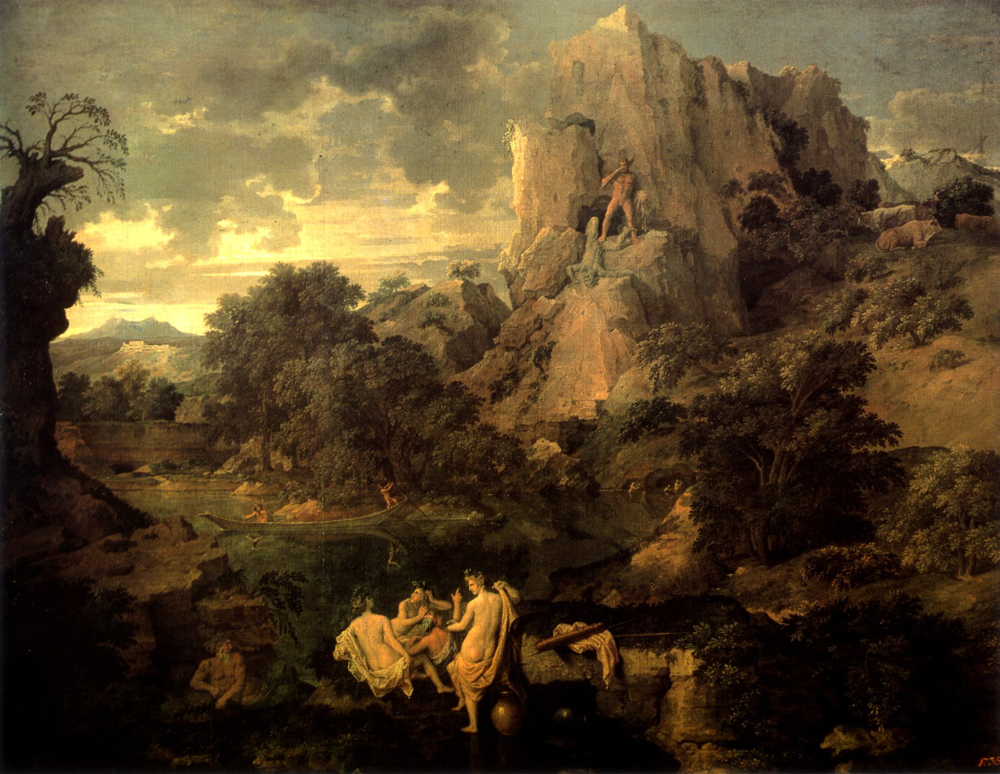

Никола Пуссен
Paysage avec Hercule et Cacus (Пейзаж с Геркулесом и Какусом), около 1660

Холст, масло, 156 x 202 см
ГМИИ им. А.С. Пушкина, Москва. Дата поступления 03.03.1930.
Источник: https://collection.pushkinmuseum.art/entity/OBJECT/77802